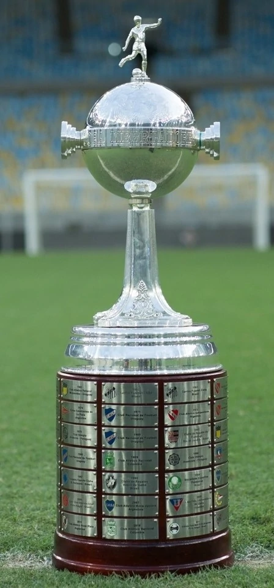

|  |
Taça libertadores da América |
| A história da Taça Libertadores da América (inicialmente chamada de Copa de Campeões da América), já foi chamada de Copa "Toyota" Libertadores, em função do patrocínio do torneio pela Fábrica de Automóveis Toyota, depois chamada de Copa "Santander" Libertadores, teve sua origem no Congresso da Confederação Sul-americana de Futebol (CSF), realizado no Rio de Janeiro em 1958. O nome Libertadores de América, é em homenagem aos heróis da independência sul-americana.
|